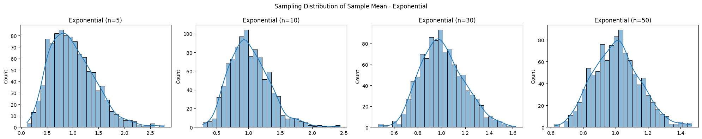

Problem 1
📈 Problem 5: Exploring the Central Limit Theorem through Simulations
🎯 Task 1: Simulating Sampling Distributions
🔢 Population Distributions
We consider the following types of population distributions:
- Uniform Distribution
- Exponential Distribution
- Binomial Distribution
For each case, we generate a large synthetic population.
import numpy as np
import matplotlib.pyplot as plt
import seaborn as sns
np.random.seed(0)
n_population = 100000
uniform_pop = np.random.uniform(0, 1, n_population)
exponential_pop = np.random.exponential(1, n_population)
binomial_pop = np.random.binomial(10, 0.5, n_population)
🧪 Task 2: Sampling and Visualization
We take samples of sizes [5, 10, 30, 50] and compute sample means repeatedly to build a distribution of sample means.
def simulate_sampling(population, sample_sizes, n_trials=1000):
results = {}
for size in sample_sizes:
means = [np.mean(np.random.choice(population, size)) for _ in range(n_trials)]
results[size] = means
return results
sample_sizes = [5, 10, 30, 50]
uniform_results = simulate_sampling(uniform_pop, sample_sizes)
exponential_results = simulate_sampling(exponential_pop, sample_sizes)
binomial_results = simulate_sampling(binomial_pop, sample_sizes)
📊 Visualization
def plot_sampling_distribution(results, dist_name):
fig, axes = plt.subplots(1, 4, figsize=(20, 4))
for i, size in enumerate(sample_sizes):
sns.histplot(results[size], kde=True, ax=axes[i], bins=30)
axes[i].set_title(f"{dist_name} (n={size})")
plt.suptitle(f"Sampling Distribution of Sample Mean - {dist_name}")
plt.tight_layout()
plt.show()
plot_sampling_distribution(uniform_results, "Uniform")
plot_sampling_distribution(exponential_results, "Exponential")
plot_sampling_distribution(binomial_results, "Binomial")

🔬 Task 3: Parameter Exploration
- As sample size increases, the distribution of sample means approaches a normal distribution, regardless of the original shape.
- The spread (variance) of the sample mean distribution decreases with larger sample sizes, reflecting \(\text{Var}(\bar{X}) = \frac{\sigma^2}{n}\).
🌍 Task 4: Practical Applications
The CLT is used in numerous fields:
- Quality Control: Predicting defect rates from sample batches.
- Economics & Finance: Estimating population parameters like average income or stock returns.
- Social Sciences: Generalizing results from surveys.
✅ Deliverables Summary
- ✔️ Python simulation of sampling distributions.
- ✔️ Histograms illustrating convergence to normality.
- ✔️ Theoretical discussion and practical relevance of the CLT.